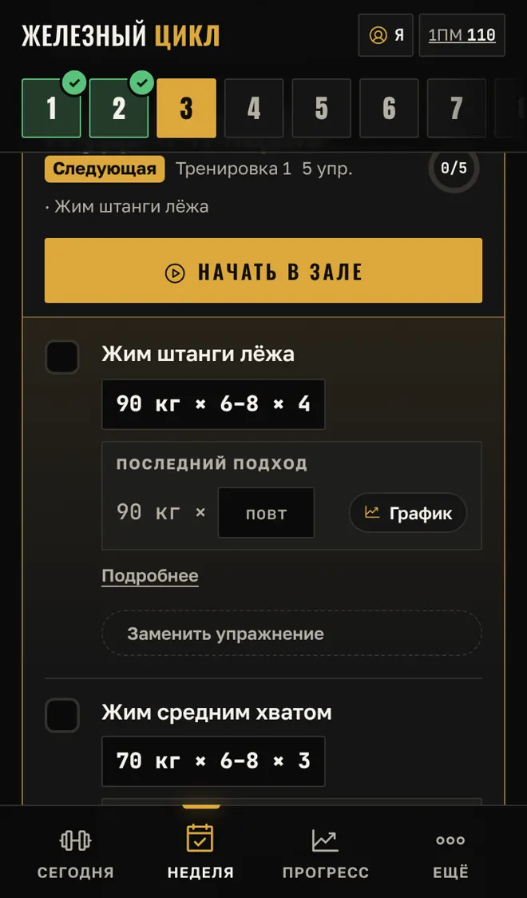

Программа силы · 13 недель
Сила по волнам
Телефон говорит, какой вес взять в каждом подходе и какие блины повесить. Лёгкие, средние и тяжёлые недели — до нового максимума.
Первые 2 недели бесплатно · без регистрации
Как это работает ↓Режим зала
Открыл — и жмёшь
Не надо считать проценты и вспоминать, что было на прошлой неделе. Программа уже знает твой вес на сегодня.

90 кг — на сторону 20 + 15. Считает из тех блинов, что есть в твоём зале.
Нажал «Сделал подход» — таймер отдыха пошёл сам. Голос подскажет следующий вес, экран не погаснет.
Впиши повторы последнего подхода. Сделал все — в следующий раз приложение само предложит больше.



Листай вбок →
Периодизация
13 недель волнами
Мышцы растут, когда нагрузка меняется. Поэтому недели чередуются: лёгкая — средняя — тяжёлая. В конце — пик и проверка нового максимума.
повторов небольшим весом. Техника идеальная, тело восстанавливается.
повторов до технического отказа: подход заканчиваешь, когда техника начинает ломаться.
повторов с большим весом, без рывков. Страхующий рядом.
повтор с новым весом, не больше 3 тяжёлых попыток. Потом новый максимум и следующий цикл.
Что внутри
Всё для зала в одном телефоне
Проценты от твоего максимума, пересчитанные в блины. Тяжёлые подходы округляются только вниз.
В подвальном зале нет сети — не страшно. Всё работает офлайн и хранится в телефоне.
Болит спина или колени — замени становую или присед одной из 2–3 проверенных альтернатив.
Расчётный максимум по неделям, рекорды и сигнал, если упёрся в застой, — с подсказкой, что делать.
Калории, белки, жиры и углеводы под цель: сушка, набор или поддержание веса.
«Железный цикл» на 13 недель и «Сила и рельеф» по системе 5/3/1 на 12. Русский, украинский, английский.
Честно
Кому подойдёт
Подойдёт, если
- в зале есть штанга, блины, гантели и скамья;
- можешь ходить 3 раза в неделю, в любые дни;
- уже знаешь технику жима, приседа и становой;
- хочешь расти в силе по плану, а не наугад.
Не подойдёт, если
- впервые берёшь штангу — сначала поставь технику с тренером;
- есть травма или боль — сначала к врачу;
- тренируешься только дома без штанги.
Сколько стоит
Начни бесплатно
Без регистрации и без карты.
- недели 1 и 2 полностью
- режим зала, таймер, блины
- графики и запись подходов
Код открывает всё на твоём телефоне.
- все 13 недель и проверка максимума
- вторая программа «Сила и рельеф»
- новый цикл с новым максимумом
В приложении: «Ещё» → «Полная версия» → скопируй номер телефона и отправь его в Telegram @Direj90.
Вопросы
Коротко о главном
Надо скачивать из App Store или Google Play?
Нет. Приложение открывается по ссылке в браузере. Чтобы было как обычное приложение — добавь его на экран «Домой»: на iPhone в Safari «Поделиться» → «На экран „Домой“», на Android в Chrome ⋮ → «Установить приложение».
Работает без интернета?
Да. После первого открытия всё работает офлайн: веса, таймер, записи. Интернет нужен только чтобы получить обновления.
Откуда программа знает мой вес?
В начале вводишь максимум в жиме, приседе и становой — или вес и сколько раз его поднимаешь, программа посчитает сама. Дальше все веса — проценты от максимума, пересчитанные в блины.
Как получить полную версию?
В приложении открой «Ещё» → «Полная версия», скопируй номер телефона и отправь его тренеру в Telegram @Direj90. Он пришлёт код — вставь его, и откроются все недели. Код работает только на твоём телефоне.
Что будет с записями, если сменю телефон?
Данные хранятся в телефоне. Перед сменой сохрани резервную копию («Ещё» → «Резервная копия») и загрузи её на новом. Для полной версии на новом телефоне напиши тренеру — код привязан к телефону.
Проверка максимума — это не опасно?
Программа даёт чёткие правила: после разминки не больше 3 тяжёлых попыток, без отказа, стоп при потере техники. Жим и присед — только со страхующим, присед — в раме со страховочными упорами.

Недели 1–2 бесплатно
Начни цикл
Введи свой максимум — и программа рассчитает каждую тренировку до проверки нового рекорда.